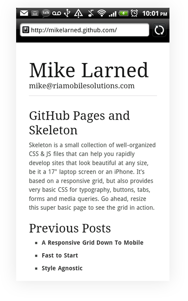

Gotta love free stuff. You can setup a mini blog using GitHub Pages and the Skeleton template in about 10 minutes. Skeleton is a boilerplate html template that uses a responsive grid layout (similiar to the 960 grid) to render a best fit based on device size. Here is a screenshot of this same page on my HTC Sense. (Which isn't going to act repsonsive and resize right now).
Skeleton's typography and basic styles are very clean looking. I found it hard to mess up the layout. The majority this post was wrapped in one div and a few p tags.
And then we can easily add gists for code snippets. I did notice that long lines in the Gist on Android didn't allow me to scroll. If you collapse this page to a smaller size, you will see the Gist creates a scroll bar after a line in the Gist is longer than its container.
The part I liked the most was the intergration into GitHub though. I'm already using git all the time, so switching over to my blog folder, adding something new and posting is simple. GitHub pages is going to pull up the index.html file. I do need to update my most recent content in that page, move my old content to a folder and then link back to that folder for refrence. Its a bit manual, but should be easy enough to script. Editing was all done in Notepad++. I also didn't mind that. I found it almost as fast to write the HMTL as I would have using a RTE. I might have to learn to spell now too.
Probably not a great setup for non developers, but for me it feels portable and I can reference anyone back to my content and projects all through GitHub. Any content indexing is going to happen on GitHub, so definitely a no go if you are using your blog as marketing material.